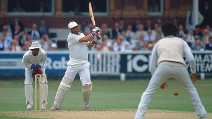
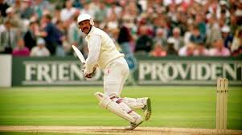

Graham Gooch
Role: Right-Handed Opening Batsman
Bio: Graham Gooch is one of England's greatest opening batsmen, renowned for his technical skill and determination. He holds the record for the highest number of Test runs by an England player and has been a pivotal figure in English cricket during his career.
Career Stats
| Format | Matches | Innings | Not Outs | Runs | High Score | Average | Strike Rate | 100s | 50s | Wickets | Best Bowling |
|---|---|---|---|---|---|---|---|---|---|---|---|
| Test | 118 | 218 | 11 | 8900 | 333 | 42.58 | 57.57 | 20 | 40 | 2 | 1/3 |
| ODI | 125 | 118 | 6 | 4568 | 123 | 36.61 | 73.54 | 8 | 21 | 0 | N/A |
Memorable Moments

Gooch's magnificent double century during the 1990 Ashes, setting the tone for England's success.
His memorable performance in the 1992 World Cup, scoring a crucial century against India in the group stage.